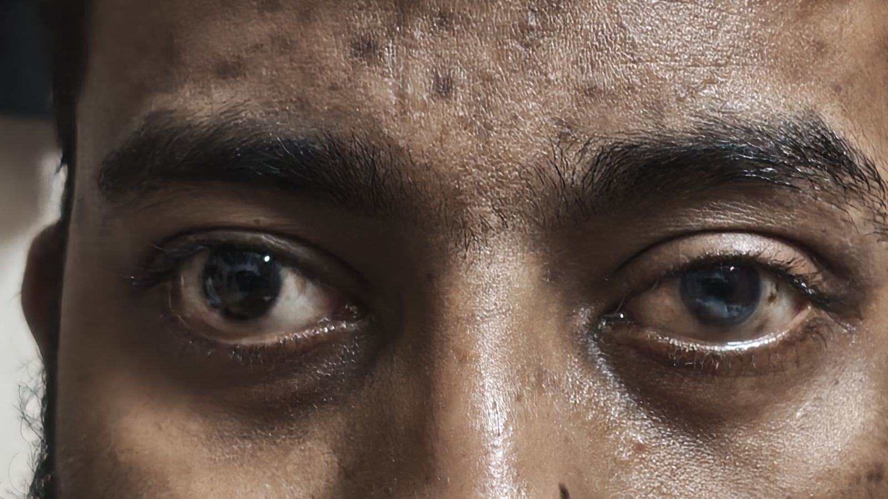

“I thought my eye had probably melted.”
“মনে হইছিল যে আমার চোখটা মনে হয় গলেই গেছে।”
“মনে হইছিল যে আমার চোখটা মনে হয় গলেই গেছে।”
“As I turned, they fired straight at my face from 10–15 feet away.”
“কাছ থেকে আইসা, ১০-১৫ ফুট হবে… চেহারা বরাবর।”
“কাছ থেকে আইসা, ১০-১৫ ফুট হবে… চেহারা বরাবর।”
“Man’s eyes are his wings. And if his wings are clipped, what can he possibly take?”
“মানুষের চোখ হচ্ছে গিয়ে তার ডানা, আর তার ডানা যদি কেটে দেওয়া হয়, তাহলে সে কি নিতে পারে?”
“মানুষের চোখ হচ্ছে গিয়ে তার ডানা, আর তার ডানা যদি কেটে দেওয়া হয়, তাহলে সে কি নিতে পারে?”
“Everything was white. I could only see my own pupil moving.”
“সব কিছু সাদা… শুধু চোখের মণি দেখতেসি… নড়তেসে।”
“সব কিছু সাদা… শুধু চোখের মণি দেখতেসি… নড়তেসে।”

July 2024 · Bangladeshজুলাই ২০২৪ · বাংলাদেশ
The Last Sightশেষ দেখা
When the pellets struck, the moment divided their lives between light and darkness. The shooting did not end when the pellets stopped moving.যে মুহূর্তে ছররা গুলি লাগল, সেই মুহূর্ত তাঁদের জীবনকে আলো আর অন্ধকারে ভাগ করে দিল। গুলি থেমে গেলেও গুলিবর্ষণ শেষ হয়নি।
By Wasiul Bahar · Photographs and recordings by the authorওয়াসিউল বাহার · ছবি ও রেকর্ডিং লেখকের
They remember different things. Some felt the light switch off suddenly. Some remember what they were looking at. Some remember what they thought had happened. Others remember almost nothing about the instant itself, only the confusion that followed.
তাঁরা ভিন্ন ভিন্ন জিনিস মনে রেখেছেন। কেউ টের পেয়েছেন, হঠাৎ আলো নিভে গেল। কেউ মনে রেখেছেন, তখন কী দেখছিলেন। কেউ মনে রেখেছেন, কী ঘটেছে বলে ভেবেছিলেন। আর কারও সেই মুহূর্তের প্রায় কিছুই মনে নেই, আছে শুধু তার পরের বিভ্রান্তি।
Scroll slowly. You will stand where each of them stood, see what they saw, and then what they see now.
ধীরে ধীরে নিচে নামুন। আপনি দাঁড়াবেন সেখানে, যেখানে তাঁরা দাঁড়িয়ে ছিলেন; দেখবেন তাঁরা যা দেখেছিলেন, আর এখন যা দেখেন।
Six peopleছয়জন মানুষ
Different places. Different reasons. The same wounds.ভিন্ন জায়গা। ভিন্ন কারণ। একই ক্ষত।
Their circumstances were different. Pulok was filming. Safwan had turned away. Jashim was at the front. Aman was trying to calm the students. Ripa was treating the wounded. Sabbir had a job, a wife and a family at home.
তাঁদের পরিস্থিতি আলাদা ছিল। পুলক ভিডিও করছিলেন। সাফওয়ান মুখ ঘুরিয়ে ছিলেন। জসিম ছিলেন সবার সামনে। আমান শিক্ষার্থীদের শান্ত করার চেষ্টা করছিলেন। রিপা আহতদের সেবা দিচ্ছিলেন। সাব্বিরের ছিল চাকরি, স্ত্রী আর বাড়িতে পরিবার।
Their injuries were not different. All six were hit in the eyes or face.তাঁদের আঘাত আলাদা ছিল না। ছয়জনেরই গুলি লেগেছে চোখে বা মুখে।
Where the pellets landedগুলি কোথায় লেগেছে
Aim below the waist. They hit above the neck.নিয়ম কোমরের নিচে। গুলি লেগেছে ঘাড়ের ওপরে।
X-ray adapted from Evangelopoulos et al. (2009), CC BY 2.0. Not a survivor’s scan.এক্স-রে: Evangelopoulos et al. (2009) থেকে সম্পাদিত, CC BY 2.0। কোনো আহতের স্ক্যান নয়।
First, a question.আগে একটা প্রশ্ন।
Where do the rules allow police to aim a weapon like this? Tap the body.এ ধরনের অস্ত্র নিয়মমতো শরীরের কোথায় তাক করা যায়? শরীরের ওপর ট্যাপ করুন।
United Nations guidance on less-lethal weapons says projectiles like these should be aimed only at the lower abdomen or legs. Aimed at the face or head, it warns, they can cause “damage to the eyes, including permanent blindness; or even death.”
কম-প্রাণঘাতী অস্ত্র নিয়ে জাতিসংঘের নির্দেশনা বলছে, এ ধরনের গুলি তাক করতে হবে কেবল তলপেট বা পায়ে। মুখ বা মাথা লক্ষ্য করলে, সতর্ক করছে নির্দেশনাটি, “চোখের ক্ষতি, এমনকি স্থায়ী অন্ধত্ব, এমনকি মৃত্যু” হতে পারে।
Bangladesh’s own police are taught the same. “Always below the belt,” Baharul Alam, a former inspector general of police, told Nutshell Today.
বাংলাদেশ পুলিশকেও একই শেখানো হয়। “সবসময় বেল্টের নিচে,” নাটশেল টুডেকে বলেছেন সাবেক পুলিশ মহাপরিদর্শক বাহারুল আলম।
In earlier unrest, the doctors at the National Institute of Ophthalmology saw pellet wounds mostly below the knee.
আগের অস্থিরতাগুলোতে জাতীয় চক্ষুবিজ্ঞান ইনস্টিটিউটের চিকিৎসকেরা ছররা গুলির ক্ষত দেখেছেন মূলত হাঁটুর নিচে।
In July 2024 the wounds moved up: to the chest, neck, face and head. Some patients carried 30 to 70 pellets above the collarbone alone, a density Dr Khair Ahmed Choudhury, the institute’s director, called clinically “abnormal”.
২০২৪ সালের জুলাইয়ে ক্ষত উঠে এল ওপরে: বুক, ঘাড়, মুখ আর মাথায়। কোনো কোনো রোগীর শুধু কণ্ঠার হাড়ের ওপরেই ছিল ৩০ থেকে ৭০টি ছররা। ইনস্টিটিউটের পরিচালক ডা. খায়ের আহমেদ চৌধুরী একে চিকিৎসাগতভাবে “অস্বাভাবিক” বলেছেন।
The UN’s fact-finding team saw the same on video: police firing “at the torso and head level of close-by crowds”, and over longer distances “at a slightly elevated angle to ensure that the metal pellets would still hit people.”
জাতিসংঘের তথ্যানুসন্ধানী দলও ভিডিওতে একই দেখেছে: পুলিশ গুলি করছে “কাছের ভিড়ের ধড় ও মাথা বরাবর”, আর দূরের ভিড়ে “সামান্য উঁচু কোণে, যাতে ধাতব ছররা তবুও মানুষের গায়ে লাগে।”
These are Mohaimin Pulok’s own X-rays, taken at the eye institute. Two pellets entered his eye along different paths. Only one was in the package he was given after surgery.
এগুলো মোহাইমিন পুলকের নিজের এক্স-রে, চক্ষু ইনস্টিটিউটে তোলা। দুটি ছররা দুই দিক দিয়ে তাঁর চোখে ঢুকেছিল। অস্ত্রোপচারের পর তাঁকে যে প্যাকেট দেওয়া হয়, তাতে ছিল একটিই।
The six people in this story describe it from the other side. Choose one to see where they say they were hit.এই গল্পের ছয়জন বলছেন অন্য দিক থেকে। একজনকে বেছে নিন, দেখুন তাঁরা কোথায় আঘাত পেয়েছেন বলে জানিয়েছেন।
One person can be an accident. Two can be a coincidence. But when protesters, bystanders and a nurse, standing in different places on different days, describe the same shots to the face and eyes, the question changes.
একজন হলে দুর্ঘটনা হতে পারে। দুজন হলে কাকতালীয়। কিন্তু যখন আন্দোলনকারী, পথচারী আর একজন নার্স, ভিন্ন জায়গায়, ভিন্ন দিনে দাঁড়িয়ে, মুখে আর চোখে একই রকম গুলির কথা বলেন, তখন প্রশ্নটা বদলে যায়।
It is whether the injury itself became part of the method.প্রশ্নটা হয়: আঘাত করাটাই কি পদ্ধতির অংশ হয়ে উঠেছিল?
The weaponঅস্ত্রটি
One cartridge. Up to 200 metal pellets.একটি কার্তুজ। ২০০টি পর্যন্ত ধাতব ছররা।
Birdshot was made for hunting small, fast birds. Drag to turn the cartridge; open it to see what is inside.ছররা বানানো হয়েছিল ছোট, দ্রুতগামী পাখি শিকারের জন্য। কার্তুজটি ঘোরাতে টেনে ধরুন; ভেতরে কী আছে দেখতে খুলুন।
The 3D model could not load on this device.
At the distance Aman describes, almost every pellet lands on a face.আমান যে দূরত্বের কথা বলেছেন, সেখান থেকে প্রায় সব ছররা লাগে মুখে।
Choose a distance and fire, in slow motion.দূরত্ব বেছে নিন, তারপর ধীরগতিতে গুলি ছুড়ুন।
A simulation, not a ballistics model: the spread follows a rule of thumb of about 2.5 cm per metre. The danger ranges are from David Bruce, a policing researcher who has studied crowd-control weapons for more than a decade.এটি একটি সিমুলেশন, ব্যালিস্টিক মডেল নয়: ছড়িয়ে পড়ার হিসাব মোটামুটি প্রতি মিটারে ২.৫ সেন্টিমিটার। বিপদসীমার তথ্য ডেভিড ব্রুসের, যিনি এক দশকের বেশি সময় ধরে ভিড় নিয়ন্ত্রণের অস্ত্র নিয়ে গবেষণা করছেন।
The countহিসাব
856 people came to one eye hospital with pellet wounds.শুধু একটি চক্ষু হাসপাতালে এসেছিলেন ছররায় আহত ৮৫৬ জন।
Each pair of eyes is one patient at the National Institute of Ophthalmology and Hospital in Dhaka. Watch.প্রতিটি জোড়া চোখ ঢাকার জাতীয় চক্ষুবিজ্ঞান ইনস্টিটিউট ও হাসপাতালের একজন রোগী। দেখুন।
Across Dhaka’s hospitals there were more than 1,300 eye-injury cases; 630 needed surgery, and more than 90% of those patients lost vision in one or both eyes. At the institute, doctors and nurses worked day and night; some stayed nearly 72 hours.
ঢাকার হাসপাতালগুলোতে চোখের আঘাতের রোগী ছিলেন ১,৩০০-এর বেশি; অস্ত্রোপচার লেগেছে ৬৩০ জনের, আর তাঁদের ৯০ শতাংশের বেশি এক বা দুই চোখের দৃষ্টি হারিয়েছেন। ইনস্টিটিউটে চিকিৎসক-নার্সরা দিনরাত কাজ করেছেন; কেউ কেউ টানা প্রায় ৭২ ঘণ্টা হাসপাতালে ছিলেন।
Dr Khair Ahmed Choudhury, who became the institute’s director weeks after the crackdown and kept treating patients for more than a year, now puts the number who lost one eye at close to 450.
দমন-পীড়নের কয়েক সপ্তাহ পর ইনস্টিটিউটের পরিচালক হন ডা. খায়ের আহমেদ চৌধুরী; এক বছরের বেশি সময় রোগীদের চিকিৎসা করেছেন। তাঁর হিসাবে এক চোখ হারানো মানুষের সংখ্যা এখন প্রায় ৪৫০।
Bought in advanceআগেভাগে কেনা
Four million pellet cartridges, ordered before the uprising.অভ্যুত্থানের আগেই কেনা ৪০ লাখ ছররার কার্তুজ।
Each cartridge here stands for 50,000 real ones bought by Bangladesh’s law-enforcement agencies.এখানে প্রতিটি কার্তুজ বাংলাদেশের আইনশৃঙ্খলা বাহিনীর কেনা ৫০,০০০টি আসল কার্তুজের সমান।
3,975,000
22 months before July 2024জুলাই ২০২৪-এর আগের ২২ মাস
485,000
23 months afterপরের ২৩ মাস
“Kinetic impact projectiles”: metal-pellet and rubber cartridges. In the same 22 months, more than 25,000 shotguns. Source: Omega Research Foundation analysis of procurement records.“কাইনেটিক ইমপ্যাক্ট প্রজেক্টাইল”: ধাতব ছররা ও রাবারের কার্তুজ। একই ২২ মাসে কেনা হয় ২৫,০০০-এর বেশি শটগান। সূত্র: ওমেগা রিসার্চ ফাউন্ডেশনের ক্রয়-নথি বিশ্লেষণ।
Everything else they boughtআর যা যা কেনা হয়েছিল
Asked what that surge indicates, David Bruce said: “Either it’s malicious and punitive in its motivation, or at the very least it’s extremely reckless.”
এই হঠাৎ বেড়ে যাওয়া কী নির্দেশ করে, জানতে চাইলে ডেভিড ব্রুস বলেন: “হয় এর উদ্দেশ্য বিদ্বেষপূর্ণ ও শাস্তিমূলক, নয়তো অন্তত চরম বেপরোয়া।”
Pellet shotguns were never classified as lethal weapons by Bangladeshi law enforcement, officials later told UN investigators. That left officers free to use them as they chose, while the state could describe the operation as restrained.
কর্মকর্তারা পরে জাতিসংঘের তদন্তকারীদের জানান, বাংলাদেশের আইনশৃঙ্খলা বাহিনী কখনো ছররা শটগানকে প্রাণঘাতী অস্ত্র হিসেবে গণ্য করেনি। ফলে সদস্যরা ইচ্ছেমতো তা ব্যবহার করতে পেরেছেন, আর রাষ্ট্র পুরো অভিযানকে বলতে পেরেছে সংযত।
Whereকোথায়
Different streets. The same wounds.ভিন্ন রাস্তা। একই ক্ষত।
Not only hereশুধু এখানেই নয়
A weapon for birds, used on people, around the world.পাখি শিকারের অস্ত্র, মানুষের ওপর, সারা বিশ্বে।
Afterতারপর
The pellets stopped moving in less than a second. Their consequences did not.ছররা থেমে গেছে এক সেকেন্ডেরও কম সময়ে। তার পরিণতি থামেনি।
“In sleep I still dream in colour. The dreams are beautiful. But when I wake up, it hurts.”
“ঘুমের ভিতরে তো এখনো স্বপ্ন দেখি, সেই রঙিন স্বপ্নগুলোই দেখি। স্বপ্ন তো দেখলে খুব ভালো লাগে, কিন্তু যখন ঘুম ভাঙে তখন তো কষ্ট হয় অনেক।”
For these six people, the question is no longer whether they survived the shooting. They did. The question is what kind of life they were left to live after it.
এই ছয়জনের জন্য প্রশ্নটা আর এই নয় যে তাঁরা গুলি থেকে বেঁচে ফিরেছেন কি না। তাঁরা ফিরেছেন। প্রশ্ন হলো, তারপর তাঁদের জন্য কেমন জীবন রেখে যাওয়া হলো।
And three questions remain open: who decided that this level of injury was acceptable, who knew it was happening, and who had the authority to stop it.
আর তিনটি প্রশ্নের উত্তর এখনো মেলেনি: কে ঠিক করেছিলেন যে এই মাত্রার আঘাত গ্রহণযোগ্য, কে জানতেন যে এটা ঘটছে, আর কার হাতে ছিল এটা থামানোর ক্ষমতা।
How this story was madeএই গল্প যেভাবে তৈরি
Wasiul Bahar interviewed six survivors in person between August and September 2026, along with Safwan’s mother, Dr Khair Ahmed Choudhury of the National Institute of Ophthalmology, policing researcher David Bruce, photojournalist Sultan Mahmud Mukut, former ICT prosecutor Tanvir Hasan Zoha and former inspector general of police Baharul Alam. Survivors’ names, photographs and recordings are used with their permission; recordings are short excerpts.
- Each chapter’s street photograph is from Dhaka in July and August 2024, by the author. It is not the exact place where that person was shot.
- The changes to the street image show each person’s sight as they describe it. They are approximations; sight loss is different for everyone.
- Where each survivor was hit is drawn from their own account, not medical records.
- The body X-ray is a real scan, not of a survivor: adapted from Evangelopoulos et al., “Personal experience with whole-body, low-dosage, digital X-ray scanning (LODOX-Statscan) in trauma” (2009), CC BY 2.0. It was cropped above two femur fractures; the right thigh was replaced with a mirror of the left, and wires, straps and clips were removed. The pellets drawn on it are an illustration.
- The knee X-ray with birdshot is by DiverDave on Wikimedia Commons, CC BY-SA 3.0, cropped.
- Mohaimin Pulok’s X-rays are from the National Institute of Ophthalmology and are shown with his permission; his name on the film has been covered.
- Sabbir was hit by a bullet, not by pellets. He is included because his injury was to the eye, in the same crackdown.
- Safwan’s sight has largely returned; the white he describes was fluid leaking inside the eye.
- The pellet flight is a simulation; the map locations are approximate.
- The music is an original score written for this page: a drone, low strings, a heartbeat and a bansuri phrase in raga Bhairavi. It contains no recorded gunfire or crowd sound.
- The Bangla version of this page is a draft translation.
Sources
- UN OHCHR, Fact-Finding Report: Human Rights Violations and Abuses related to the Protests of July and August 2024 in Bangladesh (2025)
- UN OHCHR, Guidance on Less-Lethal Weapons in Law Enforcement (2020)
- Omega Research Foundation, analysis of Bangladesh law-enforcement procurement, October 2022 to June 2026
- National Institute of Ophthalmology and Hospital, patient figures as reported by its director
- Nutshell Today, “Aim to Blind”, 25 August 2026: the first part of this investigation